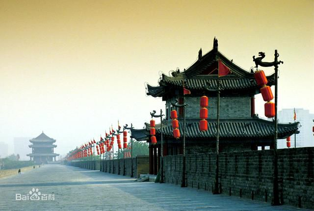
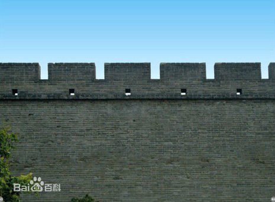

西安城墙
- 
- 
西安城墙又称西安明城墙，是中国现存规模最大、保存最完整的古代城垣 [1-7] ，是第一批全国重点文物保护单位、国家AAAA级旅游景区。广义的西安城墙包括西安唐城墙和西安明城墙，但一般特指狭义上的西安明城墙。 [8] 西安明城墙位于陕西省西安市中心区，墙高12米，顶宽12—14米，底宽15—18米，轮廓呈封闭的长方形，周长13.74千米。城墙内人们习惯称为古城区，面积11.32平方千米，著名的西安钟鼓楼就位于古城区中心。 [9] 西安城墙主城门有四座：长乐门（东门），永宁门（南门），安定门（西门），安远门（北门），这四座城门也是古城墙的原有城门。从民国开始为方便出入古城区，先后新辟了多座城门，至今西安城墙已有城门18座。 [10] 1961年3月4日，西安城墙被国务院公布为第一批全国重点文物保护单位。2018中国西北旅游营销大会暨旅游装备展上，入围“神奇西北100景”榜单。